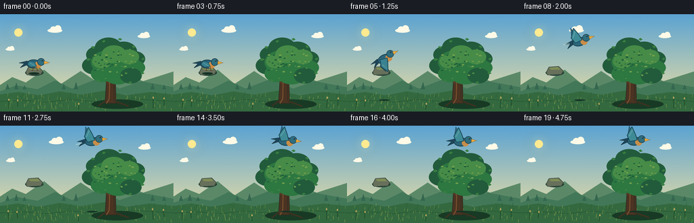
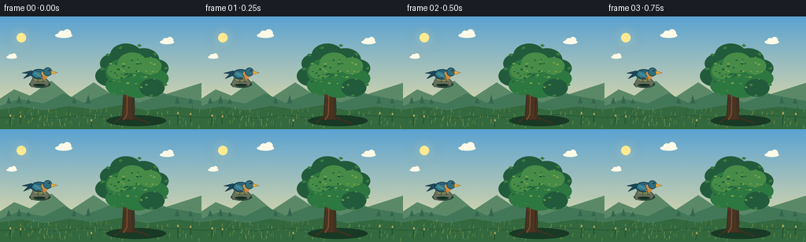

CODING AGENTS AS PIXEL WORLD MODELS
traex/GPT-5.6-Sol · dynamic_spatial_relationship_0048
点击播放 · 原生 RGB 像素
逐轮保存的候选
回放视频、检查图与代码变化。
每份候选均可单独播放。实际图片检查记录在下方工具轨迹中。
候选 01播放与检查图
点击播放 · 原生 RGB 像素


展开代码变化
--- 上一保存版本
+++ 本次保存版本
@@ -0,0 +1,228 @@
+from pathlib import Path
+import math
+import numpy as np
+from PIL import Image, ImageDraw, ImageFilter
+import artifact_io
+
+# Hand-drawn, supersampled 2-D animation. The camera stays locked so the
+# requested change in spatial relationship is especially easy to read.
+W, H, N = 256, 144, 20
+S = 4
+RW, RH = W*S, H*S
+rng = np.random.default_rng(4817)
+
+
+def sc(v):
+ return int(round(v*S))
+
+def pts(seq):
+ return [(sc(x), sc(y)) for x, y in seq]
+
+def ellipse(d, box, fill, outline=None, width=1):
+ d.ellipse(tuple(sc(v) for v in box), fill=fill, outline=outline, width=sc(width) if outline else 1)
+
+def poly(d, p, fill, outline=None, width=1):
+ d.polygon(pts(p), fill=fill)
+ if outline:
+ d.line(pts(p+[p[0]]), fill=outline, width=sc(width), joint='curve')
+
+def line(d, p, fill, width=1):
+ d.line(pts(p), fill=fill, width=sc(width), joint='curve')
+
+# Stable scene texture locations.
+grass_blades = [(float(rng.uniform(0,256)), float(rng.uniform(119,143)), float(rng.uniform(2,6)), int(rng.integers(0,3))) for _ in range(150)]
+leaf_speckles = [(float(rng.normal(0,19)), float(rng.normal(0,13)), float(rng.uniform(0.8,2.0)), int(rng.integers(0,3))) for _ in range(70)]
+
+
+def sky_image():
+ y = np.linspace(0, 1, RH)[:, None, None]
+ top = np.array([91, 163, 210], dtype=float)[None,None,:]
+ bottom = np.array([229, 220, 166], dtype=float)[None,None,:]
+ a = np.clip(y*1.12, 0, 1)
+ arr = top*(1-a) + bottom*a
+ arr = np.repeat(arr, RW, axis=1)
+ # Very subtle fine grain prevents sterile color bands.
+ noise = rng.normal(0, .65, (RH,RW,1))
+ return Image.fromarray(np.uint8(np.clip(arr+noise,0,255)), 'RGB').convert('RGBA')
+
+
+def cloud(draw, x, y, scale=1.0, alpha=100):
+ c=(255,250,231,alpha)
+ ellipse(draw,(x,y,x+28*scale,y+8*scale),c)
+ ellipse(draw,(x+5*scale,y-4*scale,x+17*scale,y+7*scale),c)
+ ellipse(draw,(x+13*scale,y-6*scale,x+26*scale,y+7*scale),c)
+
+
+def draw_background(frame):
+ im = sky_image()
+ d = ImageDraw.Draw(im, 'RGBA')
+ # soft sun glow in its own layer
+ glow = Image.new('RGBA',(RW,RH),(0,0,0,0)); gd=ImageDraw.Draw(glow,'RGBA')
+ for r, a in [(18,8),(13,13),(9,28)]:
+ ellipse(gd,(27-r,27-r,27+r,27+r),(255,235,154,a))
+ glow=glow.filter(ImageFilter.GaussianBlur(sc(5)))
+ im=Image.alpha_composite(im,glow); d=ImageDraw.Draw(im,'RGBA')
+ ellipse(d,(21,21,33,33),(255,234,145,210))
+ # clouds drift almost imperceptibly
+ drift=frame*.18
+ cloud(d,70+drift,21,0.78,82)
+ cloud(d,203+drift*.55,30,0.65,65)
+ cloud(d,8+drift*.35,50,0.48,48)
+ # distant hills
+ poly(d,[(-5,108),(18,93),(38,101),(65,82),(90,103),(119,84),(149,104),(180,86),(211,99),(261,83),(261,145),(-5,145)],(91,137,104,255))
+ poly(d,[(-5,116),(24,105),(55,111),(81,98),(106,110),(145,95),(176,110),(208,99),(262,109),(262,145),(-5,145)],(66,119,88,255))
+ # distant tiny trees, softened by atmosphere
+ for x,h in [(8,8),(21,10),(33,6),(91,8),(109,11),(222,9),(239,7)]:
+ poly(d,[(x,111),(x+3,111-h),(x+6,111)],(53,102,79,170))
+ # foreground meadow
+ poly(d,[(-2,119),(26,115),(58,120),(88,114),(119,119),(154,113),(186,120),(221,115),(258,119),(258,146),(-2,146)],(52,105,63,255))
+ # dark grounding contour
+ line(d,[(-2,129),(35,127),(67,130),(106,126),(148,130),(195,125),(258,129)],(38,86,51,150),1)
+ # grasses with very slight wind sway
+ sway=math.sin(frame*.43)*0.65
+ colors=[(103,145,73,150),(36,86,47,180),(155,167,81,125)]
+ for x,y,h,ci in grass_blades:
+ line(d,[(x,y),(x+sway*(h/5),y-h)],colors[ci],0.55)
+ # a few foreground seed heads
+ for x,y,h in [(13,140,13),(26,137,9),(226,139,15),(242,135,10),(116,141,8)]:
+ bend=sway*1.7
+ line(d,[(x,y),(x+bend,y-h)],(30,76,42,210),1)
+ ellipse(d,(x+bend-1,y-h-2,x+bend+1,y-h+1),(180,164,91,180))
+ return im
+
+
+def draw_rock(draw):
+ # A small mossy rock establishes the bird's initial resting spot without
+ # competing with the main tree.
+ ellipse(draw,(37,82,64,91),(35,65,54,80))
+ poly(draw,[(38,86),(42,78),(56,77),(63,84),(60,89),(40,90)],(103,112,91,255),(61,76,65,255),1)
+ poly(draw,[(42,79),(55,78),(59,82),(45,82)],(126,141,87,180))
+
+
+def draw_tree(im, frame):
+ d=ImageDraw.Draw(im,'RGBA')
+ sway=math.sin(frame*.34)*0.65
+ # tree shadow
+ ellipse(d,(135,126,211,140),(24,58,37,90))
+ # trunk silhouette, broad at base and forked
+ poly(d,[(155,132),(158,84),(164,67),(169,69),(171,132)],(75,51,34,255),(48,45,33,255),1)
+ poly(d,[(161,91),(143,67),(147,64),(165,80)],(76,52,34,255))
+ poly(d,[(165,84),(186,60),(190,62),(169,94)],(72,49,31,255))
+ poly(d,[(160,104),(148,94),(150,89),(164,96)],(83,56,35,255))
+ # bark highlights and roots
+ line(d,[(162,88),(161,125),(157,132)],(125,85,48,210),1.2)
+ line(d,[(168,94),(168,128),(179,135)],(49,48,31,210),1)
+ line(d,[(158,126),(145,136)],(64,50,32,220),2)
+ line(d,[(169,128),(190,136)],(64,50,32,220),2)
+ # layered crown. Offsets make a coherent, gently breathing canopy.
+ back=(34,91,59,255); mid=(45,119,65,255); light=(70,139,71,255)
+ blobs=[(145,60,18,back),(160,49,20,back),(182,55,20,back),(198,66,16,back),(139,76,18,back),(158,71,24,mid),(181,71,24,mid),(199,79,15,mid),(151,88,17,mid),(174,88,22,mid),(193,91,16,back),(168,59,18,light),(190,63,15,light),(150,70,14,light)]
+ for j,(cx,cy,r,c) in enumerate(blobs):
+ ox=sway*(0.4+(j%4)*.16)
+ ellipse(d,(cx-r+ox,cy-r*.72,cx+r+ox,cy+r*.72),c)
+ # leaf clusters and sunlit stipple, spatially attached to canopy
+ speck_cols=[(114,160,78,185),(79,139,69,190),(29,91,57,175)]
+ for k,(dx,dy,r,ci) in enumerate(leaf_speckles):
+ # ellipse gating keeps speckles confined in a natural crown
+ cx=170+dx; cy=69+dy*.78
+ if ((cx-170)/43)**2+((cy-70)/29)**2 < 1:
+ ellipse(d,(cx-r+sway*.5,cy-r*.55,cx+r+sway*.5,cy+r*.55),speck_cols[ci])
+ # a handful of recognisable individual leaves around the silhouette
+ for j,(x,y,a) in enumerate([(130,67,-15),(137,49,25),(153,40,-20),(177,37,10),(197,48,28),(211,66,-18),(210,87,12),(192,101,-20),(145,98,18)]):
+ dx=math.cos(math.radians(a))*3; dy=math.sin(math.radians(a))*3
+ poly(d,[(x-dx,y-dy*.5),(x,y-2),(x+dx,y+dy*.5),(x,y+2)],(56,126,65,240))
+
+
+def bird_pose(frame):
+ # Hold the opening relation, travel on a clean rising arc, then hold the
+ # destination above the crown.
+ if frame <= 3:
+ return 50 + math.sin(frame*.8)*.3, 73 + math.sin(frame*.9)*.35, 0.0, 'rest'
+ if frame <= 15:
+ u=(frame-3)/12.0
+ e=u*u*(3-2*u)
+ # cubic Bezier produces a plausible lift and gentle level-out
+ p0=np.array([50.,73.]); p1=np.array([71.,39.]); p2=np.array([132.,15.]); p3=np.array([168.,23.])
+ q=(1-e)**3*p0+3*(1-e)**2*e*p1+3*(1-e)*e*e*p2+e**3*p3
+ # tangent gives body attitude; reduce rotation for graphic clarity
+ t=3*(1-e)**2*(p1-p0)+6*(1-e)*e*(p2-p1)+3*e*e*(p3-p2)
+ ang=math.degrees(math.atan2(t[1],t[0]))*.52
+ return float(q[0]),float(q[1]),ang,'flight'
+ return 168+math.sin((frame-15)*.7)*.7, 23+math.sin((frame-15)*1.15)*.65, 0.0, 'hover'
+
+
+def make_bird(frame, state, angle):
+ # Draw at scene supersampling resolution onto a generous transparent tile.
+ size=64*S
+ layer=Image.new('RGBA',(size,size),(0,0,0,0)); d=ImageDraw.Draw(layer,'RGBA')
+ ox=32; oy=32
+ # flap value: negative is raised, positive is downstroke
+ if state=='rest': flap=0
+ else: flap=math.sin((frame-4)*math.pi*.78)
+ # far wing first
+ if state!='rest':
+ if flap < -0.12:
+ poly(d,[(ox-4,oy),(ox-10,oy-8),(ox-8,oy-22),(ox-3,oy-12),(ox+2,oy-2)],(41,99,122,225),(25,64,82,220),.7)
+ elif flap > .12:
+ poly(d,[(ox-5,oy),(ox-11,oy+8),(ox-7,oy+18),(ox-1,oy+9),(ox+3,oy+1)],(38,91,113,225),(25,64,82,220),.7)
+ else:
+ poly(d,[(ox-6,oy),(ox-16,oy-7),(ox-21,oy-4),(ox-10,oy+3)],(41,101,123,215))
+ # tail feathers
+ poly(d,[(ox-8,oy+1),(ox-20,oy+6),(ox-14,oy),(ox-22,oy-1),(ox-10,oy-4)],(30,72,91,255),(23,53,65,255),.7)
+ # body and warm breast
+ ellipse(d,(ox-11,oy-6,ox+10,oy+7),(43,102,123,255),(22,57,72,255),1)
+ ellipse(d,(ox+1,oy-3,ox+11,oy+7),(206,139,63,235))
+ # visible wing changes silhouette every frame
+ if state=='rest':
+ poly(d,[(ox-7,oy-4),(ox+1,oy-2),(ox+4,oy+4),(ox-5,oy+5),(ox-10,oy+1)],(54,126,142,255),(24,70,84,255),.8)
+ line(d,[(ox-6,oy-1),(ox+1,oy+3)],(111,169,164,180),.65)
+ elif flap < -0.12:
+ poly(d,[(ox-7,oy+1),(ox-11,oy-8),(ox-4,oy-21),(ox+1,oy-10),(ox+4,oy-1)],(62,139,150,255),(23,66,82,255),.9)
+ line(d,[(ox-8,oy-7),(ox-3,oy-16)],(126,180,174,180),.7)
+ elif flap > .12:
+ poly(d,[(ox-7,oy-1),(ox-10,oy+9),(ox-4,oy+20),(ox+1,oy+9),(ox+4,oy+1)],(57,130,145,255),(23,66,82,255),.9)
+ line(d,[(ox-7,oy+7),(ox-3,oy+15)],(123,177,173,180),.7)
+ else:
+ poly(d,[(ox-8,oy-2),(ox-18,oy-9),(ox-24,oy-5),(ox-10,oy+4),(ox+2,oy+2)],(57,132,146,255),(23,66,82,255),.9)
+ # head, eye, beak
+ ellipse(d,(ox+5,oy-8,ox+16,oy+3),(47,110,127,255),(22,57,72,255),.8)
+ poly(d,[(ox+15,oy-4),(ox+23,oy-1.5),(ox+15,oy+1)],(235,170,59,255),(112,75,35,255),.5)
+ ellipse(d,(ox+11,oy-5.5,ox+13,oy-3.5),(15,24,28,255))
+ ellipse(d,(ox+11.35,oy-5.25,ox+11.9,oy-4.7),(255,255,239,240))
+ if state=='rest':
+ line(d,[(ox-1,oy+5),(ox-2,oy+10)],(83,59,37,255),.7)
+ line(d,[(ox+4,oy+5),(ox+5,oy+10)],(83,59,37,255),.7)
+ line(d,[(ox-4,oy+10),(ox,oy+10)],(83,59,37,255),.6)
+ line(d,[(ox+3,oy+10),(ox+7,oy+10)],(83,59,37,255),.6)
+ if abs(angle)>.05:
+ layer=layer.rotate(-angle,resample=Image.Resampling.BICUBIC,expand=False,center=(size//2,size//2))
+ return layer
+
+
+def render(frame):
+ im=draw_background(frame)
+ d=ImageDraw.Draw(im,'RGBA')
+ draw_rock(d)
+ draw_tree(im,frame)
+ x,y,angle,state=bird_pose(frame)
+ # soft moving shadow is subtle but gives the arc physical depth
+ d=ImageDraw.Draw(im,'RGBA')
+ shadow_alpha=40 if state=='rest' else max(8,int(30-(73-y)*.32))
+ shadow_x=50 if state=='rest' else x
+ ellipse(d,(shadow_x-8,86 if state=='rest' else 126,shadow_x+8,89 if state=='rest' else 128),(19,50,37,shadow_alpha))
+ bird=make_bird(frame,state,angle)
+ # center tile on its body center
+ im.alpha_composite(bird,(sc(x)-bird.width//2,sc(y)-bird.height//2))
+ # Add a very restrained speed glint for the middle of the flight, never a duplicate bird.
+ if state=='flight' and 7 <= frame <= 12:
+ d=ImageDraw.Draw(im,'RGBA')
+ line(d,[(x-24,y+5),(x-15,y+3)],(231,239,211,70),.7)
+ return np.asarray(im.convert('RGB').resize((W,H),Image.Resampling.LANCZOS),dtype=np.uint8)
+
+
+def main():
+ frames=np.stack([render(i) for i in range(N)],axis=0)
+ artifact_io.save(frames,Path(__file__).resolve().parent)
+
+if __name__=='__main__':
+ main()
可观测工具轨迹
实际执行的命令与返回图片。
命令 1exit 0
/bin/bash -lc "cat prompt.txt && printf '\\n--- RULES ---\\n' && cat GENERATION_RULES.md && printf '\\n--- SPEC ---\\n' && cat task_spec.json"
命令 2exit 1
/bin/bash -lc "find . -maxdepth 2 -type f -printf '%p\\n' | sort && printf '\\nTOOLS\\n' && command -v ffmpeg && command -v python3"
命令 3exit 0
/bin/bash -lc "cat artifact_io.py; python3 - <<'PY'
try:
import PIL; print('PIL',PIL.__version__)
except Exception as e: print(e)
import numpy as np; print('numpy',np.__version__)
PY
command -v ffmpeg || true"命令 4exit 0
/bin/bash -lc "cat > generate.py <<'PY'
from pathlib import Path
import math
import numpy as np
from PIL import Image, ImageDraw, ImageFilter
import artifact_io
# Hand-drawn, supersampled 2-D animation. The camera stays locked so the
# requested change in spatial relationship is especially easy to read.
W, H, N = 256, 144, 20
S = 4
RW, RH = W*S, H*S
rng = np.random.default_rng(4817)
def sc(v):
return int(round(v*S))
def pts(seq):
return [(sc(x), sc(y)) for x, y in seq]
def ellipse(d, box, fill, outline=None, width=1):
d.ellipse(tuple(sc(v) for v in box), fill=fill, outline=outline, width=sc(width) if outline else 1)
def poly(d, p, fill, outline=None, width=1):
d.polygon(pts(p), fill=fill)
if outline:
d.line(pts(p+[p[0]]), fill=outline, width=sc(width), joint='curve')
def line(d, p, fill, width=1):
d.line(pts(p), fill=fill, width=sc(width), joint='curve')
# Stable scene texture locations.
grass_blades = [(float(rng.uniform(0,256)), float(rng.uniform(119,143)), float(rng.uniform(2,6)), int(rng.integers(0,3))) for _ in range(150)]
leaf_speckles = [(float(rng.normal(0,19)), float(rng.normal(0,13)), float(rng.uniform(0.8,2.0)), int(rng.integers(0,3))) for _ in range(70)]
def sky_image():
y = np.linspace(0, 1, RH)[:, None, None]
top = np.array([91, 163, 210], dtype=float)[None,None,:]
bottom = np.array([229, 220, 166], dtype=float)[None,None,:]
a = np.clip(y*1.12, 0, 1)
arr = top*(1-a) + bottom*a
arr = np.repeat(arr, RW, axis=1)
# Very subtle fine grain prevents sterile color bands.
noise = rng.normal(0, .65, (RH,RW,1))
return Image.fromarray(np.uint8(np.clip(arr+noise,0,255)), 'RGB').convert('RGBA')
def cloud(draw, x, y, scale=1.0, alpha=100):
c=(255,250,231,alpha)
ellipse(draw,(x,y,x+28*scale,y+8*scale),c)
ellipse(draw,(x+5*scale,y-4*scale,x+17*scale,y+7*scale),c)
ellipse(draw,(x+13*scale,y-6*scale,x+26*scale,y+7*scale),c)
def draw_background(frame):
im = sky_image()
d = ImageDraw.Draw(im, 'RGBA')
# soft sun glow in its own layer
glow = Image.new('RGBA',(RW,RH),(0,0,0,0)); gd=ImageDraw.Draw(glow,'RGBA')
for r, a in [(18,8),(13,13),(9,28)]:
ellipse(gd,(27-r,27-r,27+r,27+r),(255,235,154,a))
glow=glow.filter(ImageFilter.GaussianBlur(sc(5)))
im=Image.alpha_composite(im,glow); d=ImageDraw.Draw(im,'RGBA')
ellipse(d,(21,21,33,33),(255,234,145,210))
# clouds drift almost imperceptibly
drift=frame*.18
cloud(d,70+drift,21,0.78,82)
cloud(d,203+drift*.55,30,0.65,65)
cloud(d,8+drift*.35,50,0.48,48)
# distant hills
poly(d,[(-5,108),(18,93),(38,101),(65,82),(90,103),(119,84),(149,104),(180,86),(211,99),(261,83),(261,145),(-5,145)],(91,137,104,255))
poly(d,[(-5,116),(24,105),(55,111),(81,98),(106,110),(145,95),(176,110),(208,99),(262,109),(262,145),(-5,145)],(66,119,88,255))
# distant tiny trees, softened by atmosphere
for x,h in [(8,8),(21,10),(33,6),(91,8),(109,11),(222,9),(239,7)]:
poly(d,[(x,111),(x+3,111-h),(x+6,111)],(53,102,79,170))
# foreground meadow
poly(d,[(-2,119),(26,115),(58,120),(88,114),(119,119),(154,113),(186,120),(221,115),(258,119),(258,146),(-2,146)],(52,105,63,255))
# dark grounding contour
line(d,[(-2,129),(35,127),(67,130),(106,126),(148,130),(195,125),(258,129)],(38,86,51,150),1)
# grasses with very slight wind sway
sway=math.sin(frame*.43)*0.65
colors=[(103,145,73,150),(36,86,47,180),(155,167,81,125)]
for x,y,h,ci in grass_blades:
line(d,[(x,y),(x+sway*(h/5),y-h)],colors[ci],0.55)
# a few foreground seed heads
for x,y,h in [(13,140,13),(26,137,9),(226,139,15),(242,135,10),(116,141,8)]:
bend=sway*1.7
line(d,[(x,y),(x+bend,y-h)],(30,76,42,210),1)
ellipse(d,(x+bend-1,y-h-2,x+bend+1,y-h+1),(180,164,91,180))
return im
def draw_rock(draw):
# A small mossy rock establishes the bird's initial resting spot without
# competing with the main tree.
ellipse(draw,(37,82,64,91),(35,65,54,80))
poly(draw,[(38,86),(42,78),(56,77),(63,84),(60,89),(40,90)],(103,112,91,255),(61,76,65,255),1)
poly(draw,[(42,79),(55,78),(59,82),(45,82)],(126,141,87,180))
def draw_tree(im, frame):
d=ImageDraw.Draw(im,'RGBA')
sway=math.sin(frame*.34)*0.65
# tree shadow
ellipse(d,(135,126,211,140),(24,58,37,90))
# trunk silhouette, broad at base and forked
poly(d,[(155,132),(158,84),(164,67),(169,69),(171,132)],(75,51,34,255),(48,45,33,255),1)
poly(d,[(161,91),(143,67),(147,64),(165,80)],(76,52,34,255))
poly(d,[(165,84),(186,60),(190,62),(169,94)],(72,49,31,255))
poly(d,[(160,104),(148,94),(150,89),(164,96)],(83,56,35,255))
# bark highlights and roots
line(d,[(162,88),(161,125),(157,132)],(125,85,48,210),1.2)
line(d,[(168,94),(168,128),(179,135)],(49,48,31,210),1)
line(d,[(158,126),(145,136)],(64,50,32,220),2)
line(d,[(169,128),(190,136)],(64,50,32,220),2)
# layered crown. Offsets make a coherent, gently breathing canopy.
back=(34,91,59,255); mid=(45,119,65,255); light=(70,139,71,255)
blobs=[(145,60,18,back),(160,49,20,back),(182,55,20,back),(198,66,16,back),(139,76,18,back),(158,71,24,mid),(181,71,24,mid),(199,79,15,mid),(151,88,17,mid),(174,88,22,mid),(193,91,16,back),(168,59,18,light),(190,63,15,light),(150,70,14,light)]
for j,(cx,cy,r,c) in enumerate(blobs):
ox=sway*(0.4+(j%4)*.16)
ellipse(d,(cx-r+ox,cy-r*.72,cx+r+ox,cy+r*.72),c)
# leaf clusters and sunlit stipple, spatially attached to canopy
speck_cols=[(114,160,78,185),(79,139,69,190),(29,91,57,175)]
for k,(dx,dy,r,ci) in enumerate(leaf_speckles):
# ellipse gating keeps speckles confined in a natural crown
cx=170+dx; cy=69+dy*.78
if ((cx-170)/43)**2+((cy-70)/29)**2 < 1:
ellipse(d,(cx-r+sway*.5,cy-r*.55,cx+r+sway*.5,cy+r*.55),speck_cols[ci])
# a handful of recognisable individual leaves around the silhouette
for j,(x,y,a) in enumerate([(130,67,-15),(137,49,25),(153,40,-20),(177,37,10),(197,48,28),(211,66,-18),(210,87,12),(192,101,-20),(145,98,18)]):
dx=math.cos(math.radians(a))*3; dy=math.sin(math.radians(a))*3
poly(d,[(x-dx,y-dy*.5),(x,y-2),(x+dx,y+dy*.5),(x,y+2)],(56,126,65,240))
def bird_pose(frame):
# Hold the opening relation, travel on a clean rising arc, then hold the
# destination above the crown.
if frame <= 3:
return 50 + math.sin(frame*.8)*.3, 73 + math.sin(frame*.9)*.35, 0.0, 'rest'
if frame <= 15:
u=(frame-3)/12.0
e=u*u*(3-2*u)
# cubic Bezier produces a plausible lift and gentle level-out
p0=np.array([50.,73.]); p1=np.array([71.,39.]); p2=np.array([132.,15.]); p3=np.array([168.,23.])
q=(1-e)**3*p0+3*(1-e)**2*e*p1+3*(1-e)*e*e*p2+e**3*p3
# tangent gives body attitude; reduce rotation for graphic clarity
t=3*(1-e)**2*(p1-p0)+6*(1-e)*e*(p2-p1)+3*e*e*(p3-p2)
ang=math.degrees(math.atan2(t[1],t[0]))*.52
return float(q[0]),float(q[1]),ang,'flight'
return 168+math.sin((frame-15)*.7)*.7, 23+math.sin((frame-15)*1.15)*.65, 0.0, 'hover'
def make_bird(frame, state, angle):
# Draw at scene supersampling resolution onto a generous transparent tile.
size=64*S
layer=Image.new('RGBA',(size,size),(0,0,0,0)); d=ImageDraw.Draw(layer,'RGBA')
ox=32; oy=32
# flap value: negative is raised, positive is downstroke
if state=='rest': flap=0
else: flap=math.sin((frame-4)*math.pi*.78)
# far wing first
if state"'!='"'rest':
if flap < -0.12:
poly(d,[(ox-4,oy),(ox-10,oy-8),(ox-8,oy-22),(ox-3,oy-12),(ox+2,oy-2)],(41,99,122,225),(25,64,82,220),.7)
elif flap > .12:
poly(d,[(ox-5,oy),(ox-11,oy+8),(ox-7,oy+18),(ox-1,oy+9),(ox+3,oy+1)],(38,91,113,225),(25,64,82,220),.7)
else:
poly(d,[(ox-6,oy),(ox-16,oy-7),(ox-21,oy-4),(ox-10,oy+3)],(41,101,123,215))
# tail feathers
poly(d,[(ox-8,oy+1),(ox-20,oy+6),(ox-14,oy),(ox-22,oy-1),(ox-10,oy-4)],(30,72,91,255),(23,53,65,255),.7)
# body and warm breast
ellipse(d,(ox-11,oy-6,ox+10,oy+7),(43,102,123,255),(22,57,72,255),1)
ellipse(d,(ox+1,oy-3,ox+11,oy+7),(206,139,63,235))
# visible wing changes silhouette every frame
if state=='rest':
poly(d,[(ox-7,oy-4),(ox+1,oy-2),(ox+4,oy+4),(ox-5,oy+5),(ox-10,oy+1)],(54,126,142,255),(24,70,84,255),.8)
line(d,[(ox-6,oy-1),(ox+1,oy+3)],(111,169,164,180),.65)
elif flap < -0.12:
poly(d,[(ox-7,oy+1),(ox-11,oy-8),(ox-4,oy-21),(ox+1,oy-10),(ox+4,oy-1)],(62,139,150,255),(23,66,82,255),.9)
line(d,[(ox-8,oy-7),(ox-3,oy-16)],(126,180,174,180),.7)
elif flap > .12:
poly(d,[(ox-7,oy-1),(ox-10,oy+9),(ox-4,oy+20),(ox+1,oy+9),(ox+4,oy+1)],(57,130,145,255),(23,66,82,255),.9)
line(d,[(ox-7,oy+7),(ox-3,oy+15)],(123,177,173,180),.7)
else:
poly(d,[(ox-8,oy-2),(ox-18,oy-9),(ox-24,oy-5),(ox-10,oy+4),(ox+2,oy+2)],(57,132,146,255),(23,66,82,255),.9)
# head, eye, beak
ellipse(d,(ox+5,oy-8,ox+16,oy+3),(47,110,127,255),(22,57,72,255),.8)
poly(d,[(ox+15,oy-4),(ox+23,oy-1.5),(ox+15,oy+1)],(235,170,59,255),(112,75,35,255),.5)
ellipse(d,(ox+11,oy-5.5,ox+13,oy-3.5),(15,24,28,255))
ellipse(d,(ox+11.35,oy-5.25,ox+11.9,oy-4.7),(255,255,239,240))
if state=='rest':
line(d,[(ox-1,oy+5),(ox-2,oy+10)],(83,59,37,255),.7)
line(d,[(ox+4,oy+5),(ox+5,oy+10)],(83,59,37,255),.7)
line(d,[(ox-4,oy+10),(ox,oy+10)],(83,59,37,255),.6)
line(d,[(ox+3,oy+10),(ox+7,oy+10)],(83,59,37,255),.6)
if abs(angle)>.05:
layer=layer.rotate(-angle,resample=Image.Resampling.BICUBIC,expand=False,center=(size//2,size//2))
return layer
def render(frame):
im=draw_background(frame)
d=ImageDraw.Draw(im,'RGBA')
draw_rock(d)
draw_tree(im,frame)
x,y,angle,state=bird_pose(frame)
# soft moving shadow is subtle but gives the arc physical depth
d=ImageDraw.Draw(im,'RGBA')
shadow_alpha=40 if state=='rest' else max(8,int(30-(73-y)*.32))
shadow_x=50 if state=='rest' else x
ellipse(d,(shadow_x-8,86 if state=='rest' else 126,shadow_x+8,89 if state=='rest' else 128),(19,50,37,shadow_alpha))
bird=make_bird(frame,state,angle)
# center tile on its body center
im.alpha_composite(bird,(sc(x)-bird.width//2,sc(y)-bird.height//2))
# Add a very restrained speed glint for the middle of the flight, never a duplicate bird.
if state=='flight' and 7 <= frame <= 12:
d=ImageDraw.Draw(im,'RGBA')
line(d,[(x-24,y+5),(x-15,y+3)],(231,239,211,70),.7)
return np.asarray(im.convert('RGB').resize((W,H),Image.Resampling.LANCZOS),dtype=np.uint8)
def main():
frames=np.stack([render(i) for i in range(N)],axis=0)
artifact_io.save(frames,Path(__file__).resolve().parent)
if __name__=='__main__':
main()
PY
python3 generate.py
ls -lh pixels.npz inspection.png index.html frames/00.png frames/19.png"命令 5exit 0
/bin/bash -lc "python3 - <<'PY'
import numpy as np
from PIL import Image
z=np.load('pixels.npz')['pixels']
print('packed tensor:', z.shape, z.dtype)
ims=np.stack([np.asarray(Image.open(f'frames/{i:02d}.png').convert('RGB')) for i in range(20)])
print('RGB frames:',ims.shape,ims.dtype,'range',ims.min(),ims.max())
print('mean consecutive pixel changes:',[round(float(np.mean(ims[i]"'!=ims[i-1])),3) for i in range(1,20)])
print('"'all unique:',len({im.tobytes() for im in ims})==20)
PY"保存候选 1 份；完成命令 5 次；可验证图片返回 0 张。原始 API 响应与完整日志保留在本地。